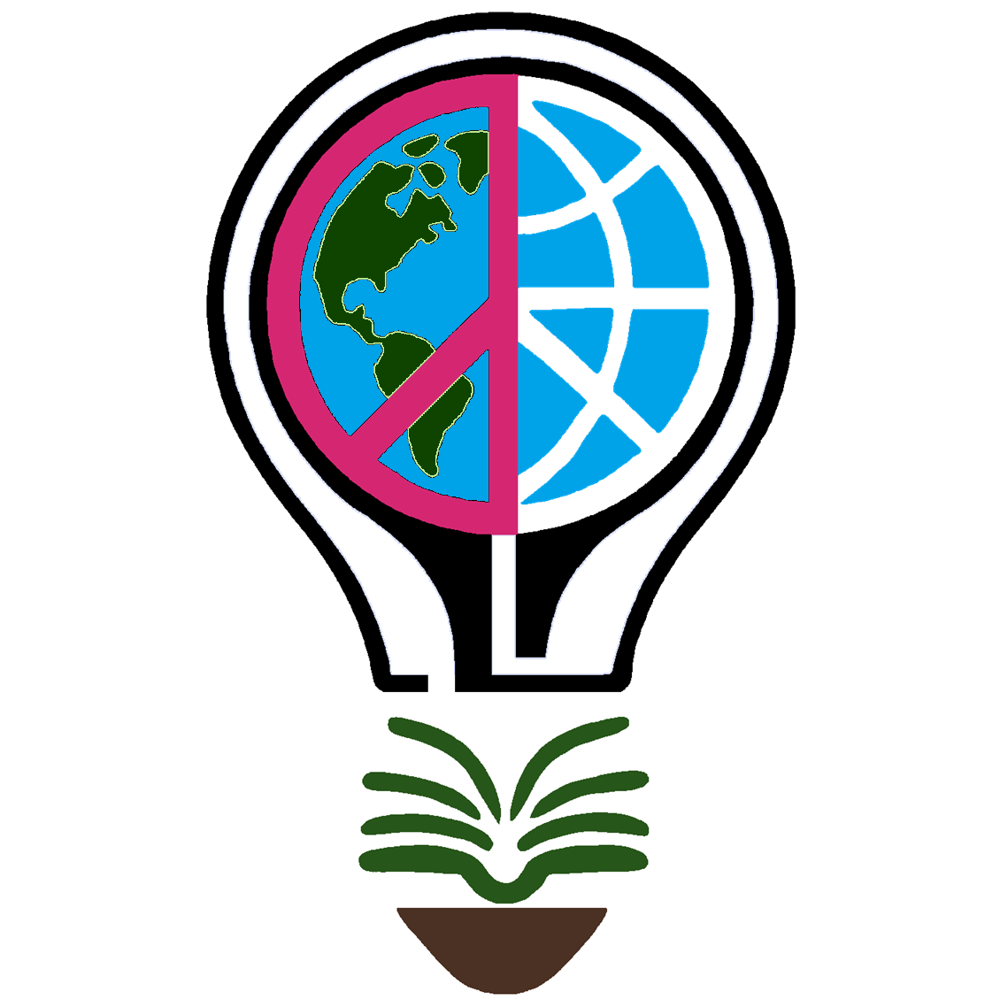
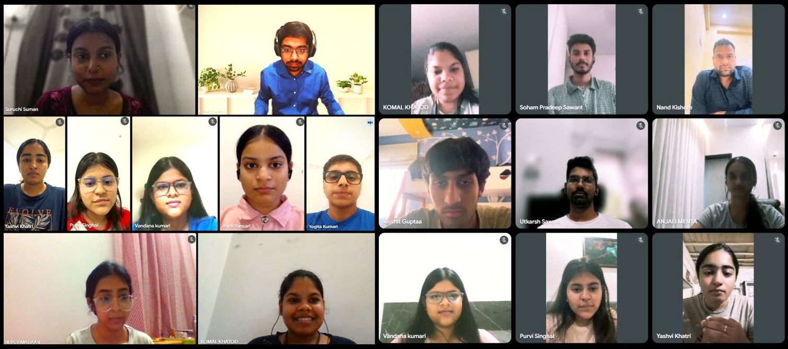

Jalte Diye Foundation (JDF)
Empowering individuals through holistic social education to achieve global peace
Jalte Diye Foundation at the Centre for Converging Technologies, University of Rajasthan
Convergence 2026: Startup Engineering | Nurolab
28–29 November 2026 CCT, UOR, Jaipur, Rajasthan
Jalte Diye Foundation (JDF) will participate in Convergence 2026 through its emerging initiative, Startup Engineering for Social Impact. Foundation Manager Deepak Sharma will deliver an invited talk presenting JDF's approach to interdisciplinary skills, innovation, and entrepreneurship, with Nurolab as a case study in bringing engineering, neuroscience, artificial intelligence, and mental health research together.
Convergence 2026 at the Centre for Converging Technologies (CCT)
Convergence 2026 is a national symposium organized by the Centre for Converging Technologies (CCT), University of Rajasthan, Jaipur. Its interdisciplinary setting offers an opportunity to share ideas and initiatives that connect fields of knowledge and explore their application to real-world challenges.
For JDF, the engagement is an opportunity to present how interdisciplinary engineering can support research, skill development, innovation, and socially meaningful entrepreneurship.
Jalte Diye Foundation's Representation
Deepak Sharma, Foundation Manager, will represent Jalte Diye Foundation at Convergence 2026 through an invited talk on the Foundation's Startup Engineering for Social Impact initiative.
The presentation will introduce JDF's ambition to help people move beyond learning skills in isolation, to identify problems, work across disciplines, build solutions, develop an entrepreneurial mindset, and explore the possibility of creating their own startups or social ventures.
This is part of JDF's broader vision of empowering individuals through holistic social education and advancing global peace through inclusive opportunity.
Startup Engineering for Social Impact at JDF
Startup Engineering is a developing, initiative of Jalte Diye Foundation. It connects practical skill development, engineering, interdisciplinary collaboration, entrepreneurship, and social innovation. Its purpose is not limited to helping learners complete projects; it is to help them build the capabilities and confidence to turn ideas into solutions and, where appropriate, into sustainable ventures of their own.
From learning skills to creating opportunities
JDF seeks to nurture an entrepreneurial mindset: curiosity, initiative, problem-solving, experimentation, collaboration, ownership, and the willingness to learn from failure. Participants can learn to identify meaningful problems, explore solutions, develop prototypes, understand users, and consider how a promising idea might become a product, service, startup, or social enterprise.
Who can participate?
The initiative is intended to create opportunities for undergraduate students, engineering students, Women in STEM, young people interested in entrepreneurship, and anyone with an idea who lacks technical or entrepreneurial skills to take it forward.
An interdisciplinary, project-led approach
- Technical and digital skill development
- Problem discovery and solution design
- Interdisciplinary teamwork and mentorship
- Project development, prototyping, and open-source collaboration
- Startup ideation and entrepreneurship education
- Business-model exploration and venture development
- Social entrepreneurship and responsible innovation
Depending on the needs and maturity of an idea, JDF aims to support learners through mentorship, project development, prototype building, startup exploration, and connections that may help them progress toward a venture. The initiative is intended to evolve with participants, projects, and collaborations.
Nurolab: An Interdisciplinary Case Study

Nurolab is Jalte Diye Foundation's initiative on smart mental health monitoring using electroencephalography (EEG) and artificial intelligence. It illustrates how a socially relevant research question can become a collaborative engineering project involving learners, mentors, and multiple disciplines.
EEG records electrical activity from the brain. Nurolab explores EEG signals alongside AI methods within a research and technology effort drawing on computer science, signal processing, neuroscience, mental health perspectives, and human-centred design.
Through project work, participants can engage with problem framing, research, data, software, documentation, and system design. Nurolab therefore provides a practical example of JDF's Startup Engineering approach: learning through meaningful problems, interdisciplinary collaboration, and the development of research-oriented technology.
Nurolab is a research initiative not a clinically validated diagnostic tool or a substitute for professional care. Its future development and any potential venture pathway would depend on further research, validation, responsible design, and appropriate expertise.
Read about Nurolab on JDF Projects & Initiatives or visit the Nurolab project repository.
Startup Engineering and the Sustainable Development Goals
JDF's Startup Engineering initiative connects most directly with the following Sustainable Development Goals (SDGs):
- SDG 4 – Quality Education: developing relevant technical, digital, and entrepreneurial skills through practical, project-based learning, particularly in line with Target 4.4.
- SDG 10 – Reduced Inequalities: widening access to skills, mentorship, and entrepreneurial opportunities for people who may face barriers to participation.
Connection to SDG 16 – Peace, Justice and Strong Institutions: Startup Engineering is not primarily an SDG 16 intervention. However, its commitment to inclusive participation, non-discrimination, and empowering people to contribute meaningfully to society supports JDF's wider vision of peaceful and inclusive communities. In this way, the initiative complements JDF's work toward global peace through holistic social education.
These are intended areas of contribution and alignment; they should not be interpreted as claims of measured SDG impact.
JDF: Social Innovation, Engineering and Entrepreneurship
Jalte Diye Foundation sees education as a means of enabling people to understand challenges, develop capabilities, participate in society, and create opportunities. Startup Engineering extends this philosophy into practical innovation and entrepreneurship.
By connecting social purpose with technical learning and entrepreneurial thinking, JDF aims to support a culture in which people are not only prepared to seek opportunities, but are also equipped to explore creating them individually or collaboratively.
This approach brings together JDF's interests in education, technology, mental well-being, environmental action, and inclusive empowerment under its broader vision of global peace through holistic social education.
Convergence 2026: Event Details
- Event
- Convergence 2026
- Organizer
- Centre for Converging Technologies, University of Rajasthan
- Event website
- Convergence 2026 event website
- Location
- Jaipur, Rajasthan, India
- Dates
- 28–29 November 2026
- Engagement
- Invited talk
- Organization represented
- Jalte Diye Foundation (JDF)
- Representative
- Deepak Sharma, Foundation Manager
- Theme
- Startup Engineering for Social Impact, with Nurolab as an interdisciplinary case study
About Jalte Diye Foundation
Jalte Diye Foundation (JDF) is a Section 8 nonprofit organization working toward global peace through holistic social education. Its initiatives span education, healthcare, environment, and information and communication technologies, with an emphasis on learning, empowerment, and socially meaningful action.
Convergence 2026: Updates and Reflections
This page serves as JDF's institutional record of its participation in Convergence 2026. It may be updated after the symposium with verified materials and reflections.
- Convergence images in the JDF gallery.
- Presentation slides, where permitted
- Talk summary
- Outcomes and reflections
- Research or institutional collaborations, where confirmed